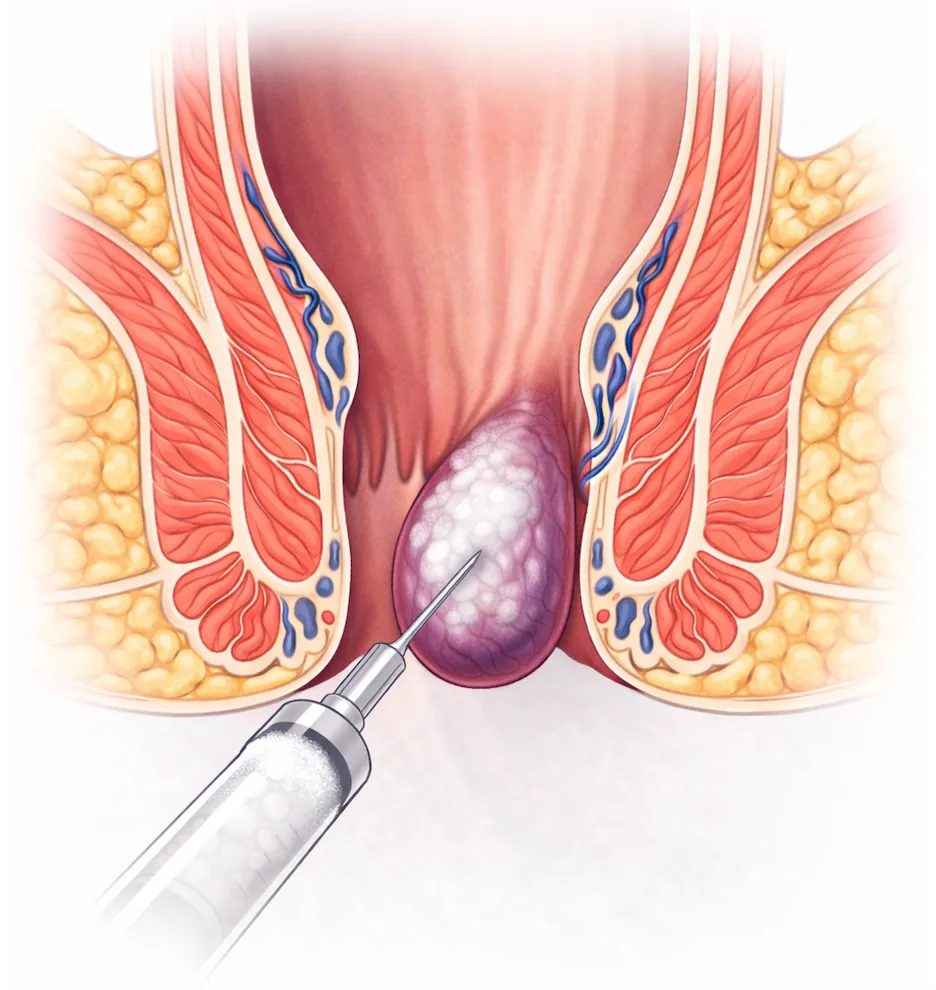

Respuesta rápida: las hemorroides son almohadillas vasculares del canal anal que, al inflamarse, sangran o prolapsan. La mayoría se tratan sin cirugía y en consulta: ligadura con banda elástica (grados II y III) o esclerosis con microespuma (grados I y II). La cirugía se reserva para el grado IV o cuando el tratamiento ambulatorio no basta. Ante cualquier sangrado conviene una valoración médica para confirmar la causa.
Qué son las hemorroides, síntomas y signos de alarma
¿Qué son? Las hemorroides son estructuras vasculares normales del canal anal que ayudan a la continencia fecal. Hablamos de enfermedad hemorroidal cuando se inflaman, sangran o prolapsan y dan síntomas. Es un problema muy frecuente: muchos adultos las padecen de forma sintomática en algún momento. Son más frecuentes con estreñimiento crónico, sedentarismo, embarazo o dieta baja en fibra.
Síntomas más frecuentes
- Sangrado rectal, generalmente rojo brillante, al defecar o en el papel higiénico
- Prolapso: sensación de bulto o tejido que sale por el ano
- Picor o escozor perianal persistente
- Dolor o molestia al defecar o al estar sentado
- Manchado de la ropa interior
- Sensación de evacuación incompleta
No todo sangrado es hemorroidal. Una fisura, un pólipo o, con menos frecuencia, un tumor colorrectal pueden dar los mismos síntomas. Consulta sin esperar si hay:
- Sangre oscura o mezclada con las heces
- Cambio reciente en el ritmo intestinal
- Pérdida de peso, cansancio o anemia
- Antecedentes familiares de cáncer colorrectal
- Sangrado persistente a partir de los 50 años
Un bulto duro, doloroso y de color morado junto al ano puede ser una hemorroide trombosada: es motivo de consulta urgente. Más información en sangrado rectal: causas frecuentes y síntomas de hemorroides.
Grados de las hemorroides (escala de Goligher) y tratamiento
El grado determina qué tratamiento encaja mejor. La decisión final se toma tras la exploración, porque dos pacientes con el mismo grado pueden necesitar cosas distintas.
| Grado | Qué ocurre | Tratamiento habitual |
|---|---|---|
| I | Sangrado sin prolapso; las hemorroides no se ven por fuera | Medidas dietéticas y esclerosis con microespuma; ligadura si el sangrado persiste |
| II | Prolapsan al defecar y se reducen solas | Ligadura con banda elástica o esclerosis con microespuma |
| III | Prolapsan y hay que reducirlas con el dedo | Ligadura con banda elástica, en una o varias sesiones |
| IV | Prolapso permanente, no reducible | Generalmente cirugía |
Tratamientos: ligadura, esclerosis y cirugía
En la consulta el Dr. Jaime Jorge Cerrudo hace la exploración, el diagnóstico y, cuando está indicado, el tratamiento en la misma visita.

Cirugía. La hemorroidectomía y otras técnicas quirúrgicas se reservan para el grado IV, para los casos que no responden a lo anterior y para algunas hemorroides trombosadas agudas. Requiere anestesia y una recuperación más larga. En general, la mayoría de los pacientes no la necesita. Cuándo es necesario operar.
Comparativa
| Ligadura | Esclerosis | Cirugía | |
|---|---|---|---|
| Indicación principal | Grados II y III | Grados I y II con sangrado | Grado IV o fracaso del tratamiento ambulatorio |
| Dónde se hace | Consulta | Consulta | Quirófano |
| Anestesia | No | No | Sí |
| Molestias | Presión o peso 24-48 h | Mínimas | Dolor de varios días |
| Vuelta a la actividad | 24-48 horas | El mismo día | 2-4 semanas |
| Sesiones | Una o más | Una o más | Una |
| Riesgos principales | Sangrado tardío (día 5-14), dolor | Molestia pasajera, recidiva | Dolor, sangrado, retención urinaria |
Después del tratamiento, urgencias y prevención
Qué es normal tras la ligadura o la esclerosis
- Algo de sangre mezclada con las heces durante los primeros 5 a 14 días
- Sensación de peso o presión en el ano durante 24 a 48 horas
- Molestia leve que suele controlarse con un analgésico habitual
Puedes tomar antiinflamatorios con normalidad. Si tomas anticoagulantes, consulta antes del tratamiento y no los suspendas por tu cuenta. Y contacta con la consulta de inmediato si aparece sangrado abundante con coágulos, fiebre, dolor intenso que va a más o imposibilidad para orinar.
Hemorroide trombosada. Es un coágulo dentro de una hemorroide externa: aparece un bulto duro, doloroso y de color morado. Si la trombosis es externa, durante las primeras 72 horas se puede extirpar la hemorroide con un procedimiento, lo que mejora los síntomas y evita que esa misma hemorroide vuelva a inflamarse. Pasado ese tiempo, la extirpación no aporta ventaja en la evolución de la crisis y suele tratarse con analgesia y medidas locales. Si la crisis es interna, el tratamiento es siempre médico y no se recomienda extirpar. Retirar solo el trombo (trombectomía) no está recomendado. No esperes a que se pase solo.
Cómo prevenir las hemorroides y que vuelvan
- Fibra: unos 25 a 30 gramos al día (fruta, verdura, legumbres, cereales integrales)
- Beber agua con regularidad a lo largo del día
- No pasar más de 5 minutos en el inodoro ni hacer fuerza; dejar el móvil fuera
- No aguantar las ganas de ir al baño
- Actividad física diaria y no estar muchas horas sentado
- Tratar el estreñimiento o la diarrea crónicos en lugar de convivir con ellos
Diagnóstico y tratamiento en el mismo acto
El paciente no tiene que volver otro día para el tratamiento: en una sola visita se hace la exploración, el diagnóstico y, si está indicado, el procedimiento.
1. Historia clínica y exploración (inspección, tacto y anoscopia)
2. Diagnóstico y grado de la hemorroide
3. Tratamiento en el acto cuando está indicado
4. Indicaciones de cuidados y revisión
Sin ingreso hospitalario, sin anestesia general y con recuperación inmediata o en 24-48 horas. Técnicas recomendadas por las guías clínicas internacionales.
Preguntas frecuentes sobre hemorroides
Bibliografía
- Davis BR, Lee-Kong SA, Migaly J, Feingold DL, Steele SR. The American Society of Colon and Rectal Surgeons Clinical Practice Guidelines for the Management of Hemorrhoids. Dis Colon Rectum. 2018;61(3):284-292. PubMed
- van Tol RR, Kleijnen J, Watson AJM, et al. European Society of ColoProctology: guideline for haemorrhoidal disease. Colorectal Dis. 2020;22(6):650-662. ESCP
- Gallo G, Martellucci J, Sturiale A, et al. Consensus statement of the Italian Society of Colorectal Surgery (SICCR): management and treatment of hemorrhoidal disease. Tech Coloproctol. 2020;24(2):145-164. PubMed Central